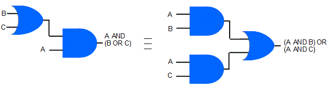

<div id="jsn-maincontent" class="span9 order1 row-fluid">
  <div id="jsn-maincontent_inner">
    <div id="jsn-centercol">
      <div id="jsn-centercol_inner">
        <div id="jsn-mainbody-content" class="jsn-hasmainbody">
          <div id="jsn-mainbody-content-inner1">
            <div id="jsn-mainbody-content-inner2">
              <div id="jsn-mainbody-content-inner3">
                <div id="jsn-mainbody-content-inner4" class="row-fluid">
                  <div id="jsn-mainbody-content-inner" class="span12 order1">
                    <div id="jsn-mainbody">
                      <div id="system-message-container"></div>

                      <div
                        class="item-page"
                        itemscope
                        itemtype="https://schema.org/Article"
                      >
                        <meta itemprop="inLanguage" content="en-GB" />

                        <div itemprop="articleBody">
                          <p></p>
                          <h1 style="text-align: center">
                            The commutative, associative and distributive
                            Boolean laws
                          </h1>
                          <p class="NormalContent">
                            <strong
                              ><strong>Introduction<br /></strong></strong
                            >So far, we know what some of the basic logic gates
                            look like, we have drawn simple logic diagrams to
                            explain the twelve basic identities that we will be
                            using to manipulate Boolean expressions and we have
                            used a couple of simple truth tables to help us
                            understand a few of the diagrams, although we will
                            deal truth tables in more detail in another section.
                            There are a few more rules that we need to know, but
                            fortunately, the ones in this section are
                            straightforward.&nbsp;
                          </p>
                          <p class="NormalContent">
                            The important thing to remember about these three
                            Boolean algebra laws, the commutative law for
                            addition and multiplication, the associative law for
                            addition and multiplication and the distributive law
                            are that they are the same as for normal algebra,
                            the kind that you have been doing in Maths since the
                            start of secondary school.
                          </p>

                          <p class="NormalContent">
                            <strong>Commutative law<br /></strong>This law says:
                          </p>
                          <p class="NormalContent">
                            
                          </p>
                          <p class="NormalContent">
                            A AND B ≡&nbsp;B AND A &nbsp; &nbsp;and in notation,
                            we would write:
                          </p>
                          <p class="NormalContent" style="margin-left: 30px">
                            <strong>A&nbsp;Λ B </strong>≡<strong
                              >&nbsp;B&nbsp;Λ A</strong
                            >
                          </p>
                          <p class="NormalContent">as well as&nbsp;</p>
                          <p class="NormalContent" style="margin-top: 10px">
                            A OR B ≡&nbsp;B OR A &nbsp; &nbsp;and in notation,
                            we would write:
                          </p>
                          <p
                            class="NormalContent"
                            style="margin-bottom: 10px; margin-left: 30px"
                          >
                            <strong>A&nbsp;V B </strong>≡<strong
                              >&nbsp;B&nbsp;V A</strong
                            >
                          </p>
                          <p class="NormalContent">
                            All the commutative law is saying is that if you are
                            dealing solely with ANDs or solely with ORs, then
                            you can move the elements in a Boolean equation
                            around. It's a little bit like saying if you need to
                            add 5 to 14, it doesn't matter whether the sum is 5
                            + 14 or 14 + 5, or if you need to multiply 3 by 5,
                            it doesn't matter if you do 3 times 5, or 5 times 3.
                            The answer will be the same. We should note that in
                            Boolean algebra, addition and logical OR are the
                            same, and multiplication and AND are the same, but
                            we will see more of this in later sections.
                          </p>
                          <p class="NormalContent">
                            <strong><br />Associative law</strong><br />This law
                            says:
                          </p>
                          <p class="NormalContent">
                            
                          </p>
                          <p class="NormalContent">
                            A AND (B AND C) ≡ (A AND B) AND C &nbsp; &nbsp; and
                            in notation, we would write:
                          </p>
                          <p class="NormalContent" style="margin-left: 30px">
                            <strong>A&nbsp;Λ (B Λ C) &nbsp;</strong>≡<strong
                              >&nbsp;(A&nbsp;Λ B) Λ C</strong
                            >
                          </p>
                          <p class="NormalContent">as well as</p>
                          <p class="NormalContent">
                            (A OR B) OR C ≡&nbsp;A OR (B OR C)&nbsp;&nbsp;
                            &nbsp; &nbsp;and in notation, we would write:
                          </p>
                          <p class="NormalContent" style="margin-left: 30px">
                            <strong>(A V B) V C </strong>≡<strong
                              >&nbsp;A V (B V C)</strong
                            >
                          </p>
                          <p class="NormalContent">
                            As long as you are dealing only with ANDs, or only
                            with ORs, then it doesn't matter which elements you
                            AND or OR first. The associative law is a little bit
                            like saying if you want to add three numbers, it
                            doesn't matter whether you add the first two numbers
                            first and then the third number, or add the second
                            and third number first and then add the first
                            number. The result will be the same. Of course, we
                            aren't adding, we are using logic operations but the
                            idea is the same.&nbsp;
                          </p>
                          <p class="NormalContent">
                            <strong style="line-height: 1.5"
                              ><br />Distributive law<br /></strong
                            >This law says:
                          </p>
                          <p class="NormalContent">
                            
                          </p>
                          <p class="NormalContent">
                            A AND (B OR C) ≡&nbsp;(A AND B) OR (A AND C)&nbsp;
                            &nbsp; &nbsp; &nbsp;and in notation, we would write:
                          </p>
                          <p class="NormalContent" style="margin-left: 30px">
                            <strong>A&nbsp;Λ (B V C) </strong>≡<strong
                              >&nbsp;(A&nbsp;Λ B) V (A&nbsp;Λ C)</strong
                            >
                          </p>
                          <p class="NormalContent">as well as</p>
                          <p class="NormalContent">
                            A OR (B AND C) ≡&nbsp;(A OR B) AND (A OR C)&nbsp;
                            &nbsp; &nbsp; and in notation, we would write:
                          </p>
                          <p class="NormalContent" style="margin-left: 30px">
                            <strong>A V (B&nbsp;Λ C) </strong>≡<strong
                              >&nbsp;(A V B)&nbsp;Λ (A V C)</strong
                            >
                          </p>
                          <p>
                            Note the reverse is true as well, in that you can
                            remove factors (common variables), like in normal
                            algebra. for example if you had (<em
                              ><strong>3 * 4) + (3 * 2)</strong></em
                            >, you could factorise this into
                            <em><strong>3(4 + 2)</strong></em
                            >. Both answers give 18. The Boolean equivalent of
                            this is:
                          </p>
                          <p>(A AND B) OR (A AND C)&nbsp;≡ A AND (B OR C)</p>
                          <p></p>
                        </div>
                      </div>
                    </div>
                  </div>
                </div>
              </div>
            </div>
          </div>
        </div>
      </div>
    </div>
  </div>
</div>
